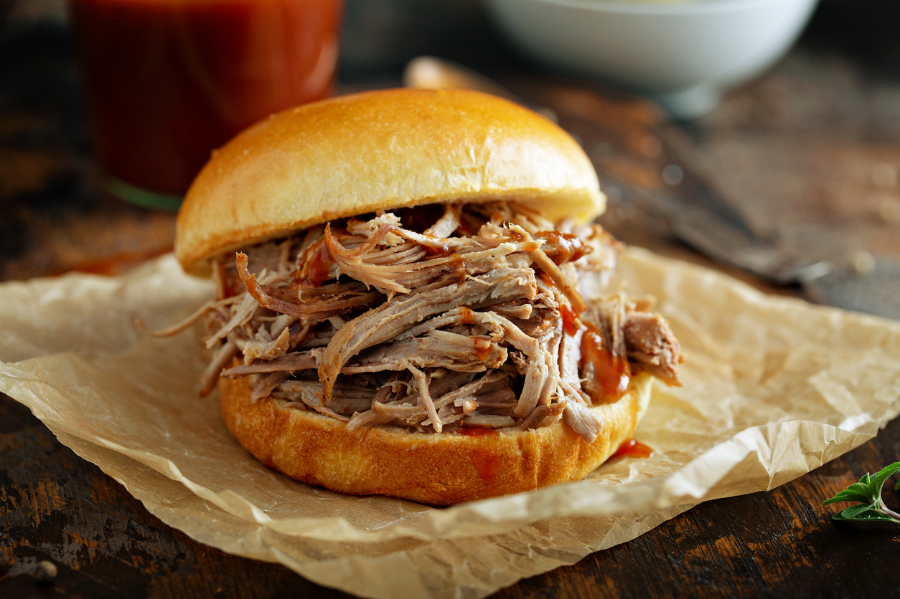

Home
Pulled Pork Sandwiches
These pulled pork sandwiches are perfect for a hearty and satisfying meal.

Pulled pork sandwiches are a delicious and comforting dish that features tender, slow-cooked pork shoulder
that's been shredded and mixed with a flavorful barbecue sauce. Served on a soft bun, these sandwiches are
perfect for a casual lunch or dinner. Whether you're hosting a barbecue or just looking for an easy weeknight meal,
pulled pork sandwiches are sure to be a crowd-pleaser.
Ingredients
- 3-4 lb pork shoulder
- 1 cup barbecue sauce
- 1/2 cup apple cider vinegar
- 1/4 cup brown sugar
- 1 tbsp smoked paprika
- 1 tsp garlic powder
- 1 tsp onion powder
- Salt and pepper to taste
- 8 hamburger buns
- Coleslaw (optional)
Instructions
- In a slow cooker, combine barbecue sauce, apple cider vinegar, brown sugar, smoked paprika, garlic powder, onion powder, salt, and pepper.
- Add pork shoulder to the slow cooker and coat with the sauce mixture.
- Cook on low for 8-10 hours or on high for 4-5 hours, until the pork is tender and easily shredded.
- Remove pork from slow cooker and shred using two forks. Return shredded pork to the slow cooker and mix with the sauce.
- Serve pulled pork on hamburger buns, topped with coleslaw if desired.
More Recipes